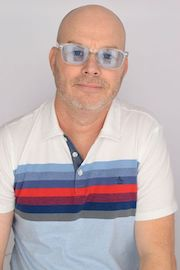

Michael Haggerty

Hello and welcome to my personal resume page. In the past, I have played in a traveling band, served in the Middle East with the USAF, owned a residential painting company, manyfactured my own health food products and a later opened to the public with a restaurant that featured my own products. I enjoyed running my own companies for most of my life, but I have also worked for sereral companies. I have worked in a large-scale food production facility, and even worked in manufacturing assembling commmercial 3D printers most recently. I have worked in electronics and even avionics in the AF as an F-16 avionics technician. My specialty was communications, navigation and radar (AFSC 2A3x2). I have a solid background in electroncis and computers. I have always enjoyed working with electronics and programming. I have been attending college for the past year attempting to wrap up my BS in Computer Science. While Georgia State University focuses on the software side of computing, I enjoy working with hardware as well. I hope that GSU eventually will have a lab necessary for this type of schooling.
Education
- Associates in Science, Georgia Perimeter College 2019
- Bachelors in Computer Science in progress expected 2021
- Parkview High School High School Diploma 1991
Work History
- Hyrel International
- Parabel
- Planet Yum
- Steady Hand Painting
- USAF
My best meals are...
Cooked at home!
- Burritos
- Pizza
- Grilling Anything on a Big Green Egg
I also enjoy playing music. I recently updated my recording software and enjoy recording music.
Do every act of your life as if it's your last.
- Marcus Aurelius
My GitHub Page
My LinkedIn Page
| First |
Last |
Age |
| Sevrin |
Haggerty |
20 |
| Beth |
Smiff |
68 |
| Randy |
Smiff |
62 |